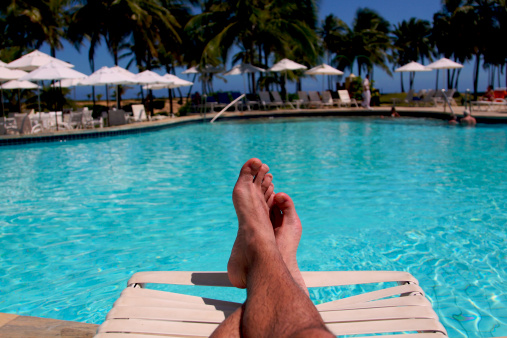

Pagamento em até 12 x , ou á vista R$ 1.840 |
|---|
|  |
O Forte de Santo Antônio da Barra, popularmente chamado de Farol da Barra, é uma fortificação localizada na ponta do Padrão, em Salvador, no estado da Bahia, Brasil. De acordo com a Marinha do Brasil, é a primeira edificação militar do país, sendo seu farol o mais antigo das Américas. Teve sua estrutura atual erigida entre 1696 e 1702, a partir de um primitivo forte erguido no século 16.
A praia do Porto da Barra está situada no bairro da Barra, banhada pela Baía de Todos os Santos. Localiza-se no bairro da Barra; limita-se ao sul pela encosta que é formada pela Ladeira da Barra, passando pelo Hospital Espanhol indo até o Farol da Barra, passando pela fortaleza de Santa Maria. Esta praia possui uma pequena extensão de areia e é bastante frequentada aos fins de semana e feriados, possuindo uma pequena enseada de ondas calmas e água de temperatura agradável, bastante propício ao banho de mar.
Centro Histórico de Salvador, ou simplesmente Centro Histórico, é um bairro brasileiro localizado na cidade de Salvador, na Bahia. Ele compreende a área histórica da cidade, composto por ruas e monumentos arquitetônicos da época do Brasil Colônia.
Atualizados 3 minutos atrás
Centro Histórico de Salvador (CHS), ou simplesmente Centro Histórico, é um bairro brasileiro localizado na cidade de Salvador, na Bahia.Ele compreende a área histórica da cidade, composto por ruas e monumentos arquitetônicos da época do Brasil Colônia. Abrange áreas do Pelourinho, praça da Sé, Terreiro de Jesus, Largo do São Francisco e Santo Antônio Além do Carmo. A via principal de acesso é a tradicional Rua Chile, que inicia na Praça Castro Alves e termina na Praça da Sé. Tem o maior conjunto arquitetônico do período colonial preservado na América Latina, sendo um local altamente turístico com museus, lojas, centros culturais, igrejas, apresentações musicais, variadas opções gastronômicas e de hospedagem e comércio de souvenirs em meio aos diversos casarões e sobrados coloniais. A região é extremamente rica em monumentos históricos que datam do século XVII até o início do século XX. Isso porque Salvador foi a primeira capital colonial do Brasil e a cidade é uma das mais antigas do Novo Mundo (fundada em 1549 por colonizadores portugueses). Foi também um dos primeiros mercados de escravos do continente, que chegaram para trabalhar nas plantações de açúcar e, posteriormente, para a extração de ouro nas Minas Gerais.
Veja abaixo !
Atualizados 3 minutos atrás
O Elevador Lacerda é um sistema de transporte público da cidade de Salvador, capital do estado brasileiro da Bahia. Trata-se do primeiro elevador urbano do mundo. Em 8 de dezembro de 1873, quando a primeira torre foi inaugurada, era o elevador mais alto do mundo, com 63 metros. A estrutura atual, de 1930, tem 72 metros de altura. Faz o transporte de pessoas entre a Praça Cairu, na Cidade Baixa, e a Praça Tomé de Sousa, na Cidade Alta.
O Terreiro de Jesus é uma praça de grande importância histórico-cultural localizada no Centro Histórico de Salvador, na Bahia, no Brasil. Localiza-se diante da atual Catedral Basílica. Localizado na parte mais antiga da capital, o terreiro limita-se com a Praça da Sé, que também é o nome do distrito ao qual pertence. Oficialmente, é denominado Praça 15 de Novembro.
Atualizados 3 minutos atrás
Apesar de não ser o mais barato, o Mercado Modelo tem centenas de opções de souvenires e é provávelmente o local mais turístico para fazer compras em Salvador. Localizado logo abaixo do Elevador Lacerda, ele é o mercado mais famoso da cidade, e reúne boxes de souvenires, roupas, intrumentos baianos, elementos do candomblé, doces, artesanatos.
O centro histórico da cidade, conhecido como Pelourinho, é um ótimo lugar onde comprar lembrancinhas e souvenir em Salvador. Por entre suas ladeiras e vielas, há lojinhas únicas de artesanatos e lembrancinhas, bem como galerias.